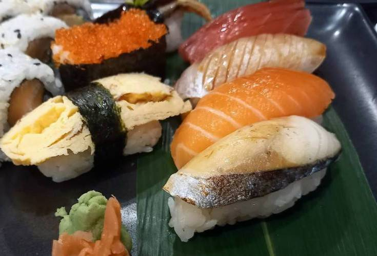
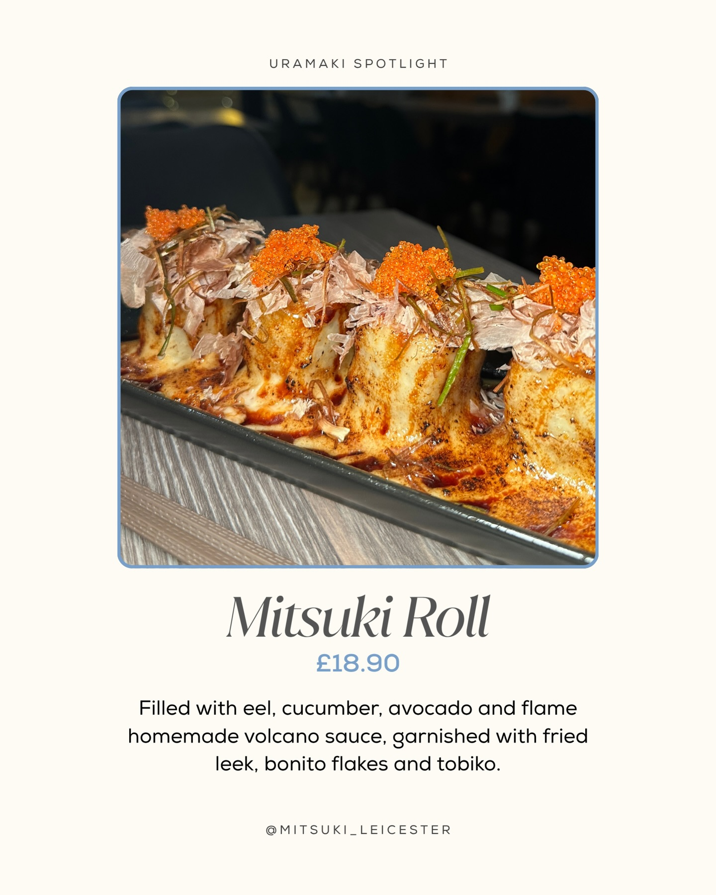

109 LONDON ROAD · LEICESTER
Good company.
A table of
Japanese favourites.
Sushi, sashimi and warming bowls. Make a little time for Mitsuki.
Find your favourites ↓Call to ask about a table
A JAPANESE STOP ON LONDON ROAD
A roll to share.
A bowl to settle into.
Come with a favourite in mind, or take your time exploring. From sushi to bento and ramen, here are a few published dishes to start the conversation.

THE NAMESAKE
The Mitsuki Roll.
Eel, cucumber and avocado, finished with a flamed sauce and a generous garnish. A published favourite to ask about when you visit.
From Mitsuki’s 2 July post. Please ask the restaurant for current prices and availability.
Explore the selection ↑YOUR LONDON ROAD TABLE
Make a little
time for Mitsuki.
For a table, today’s menu or any dietary and access questions, speak directly to the team.
Call 0116 255 4805See Mitsuki on Instagram ↗Find us
109 London RoadLeicester, LE2 0PF
Published opening hours
- Monday, Wednesday–Sunday
- 12:00–14:30 & 17:00–22:00
- Tuesday
- Closed
From the restaurant’s Instagram profile, checked 20 October 2026. Call before travelling for holiday changes or a table.
A LITTLE MORE MITSUKI
Something good
to look forward to.
A proposed email update for restaurant news and menu inspiration.